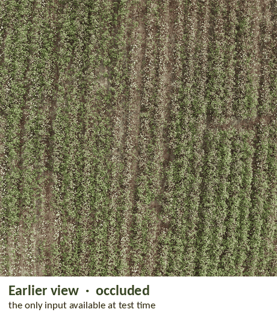
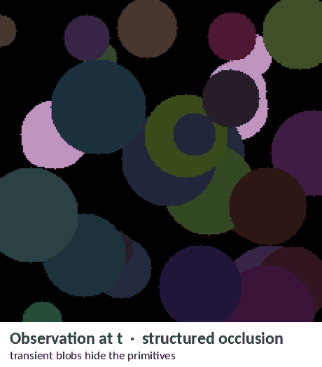
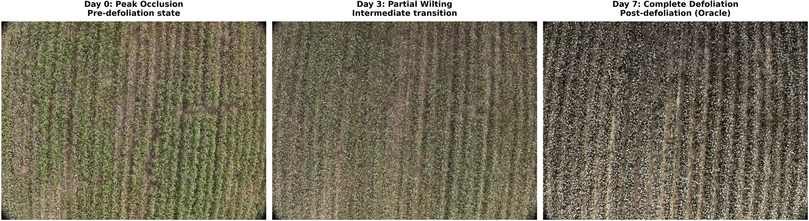
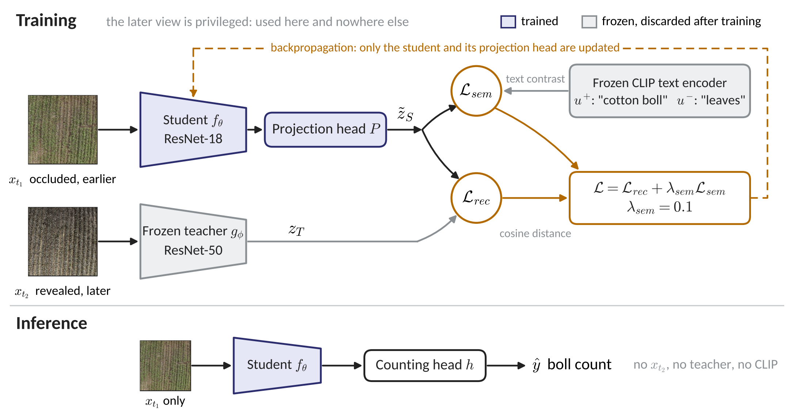
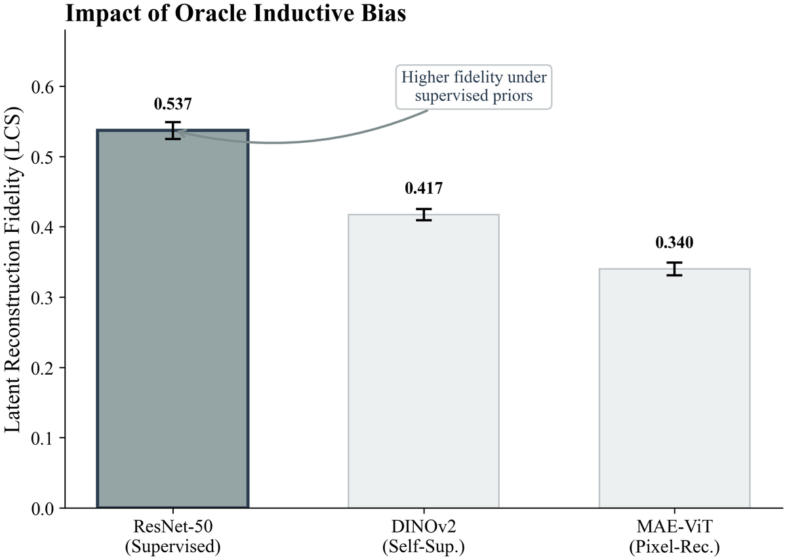
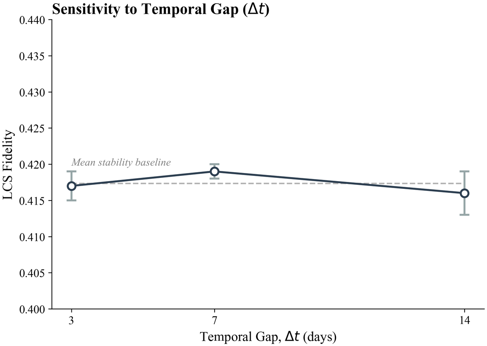

Accepted at DevAI: Developmental Perspectives on AI · NeurIPS 2026 Workshop · Atlanta · December 13
Learning Object Permanence from Natural Revealing Events
Temporal privileged distillation for amodal counting
1The University of Texas at Dallas 2The University of Texas at Tyler 3USDA Agricultural Research Service
Hypothesis. Stable object representations can be supported by temporally ordered revealing events, provided that object identity is preserved. We turn that idea into a training signal. It is a machine-learning test of the hypothesis, not a model of infant cognition.


Abstract
Developmental vision is shaped by repeated experiences with objects that change in visibility while keeping their identity and structure. We apply this idea to train models for amodal counting when objects are heavily and systematically occluded. Temporal Privileged Distillation (TePD) uses pairs of images: one showing objects partially hidden, and another taken later, after a natural process such as defoliation has removed much of the obstruction. During training, a frozen teacher encodes the later view while a smaller student learns from the occluded image. The student matches the teacher's representation and keeps the semantic cues needed for counting. At test time the student works on its own: no future image or teacher is needed. On Cotton-TePD, 3,000 drone image pairs taken before and after cotton defoliation, TePD reaches a latent cosine similarity of 0.873 and a counting mean absolute error of 4.2, compared with 0.745 and 7.2 for the strongest evaluated baseline. A controlled synthetic task yields 0.972 similarity, suggesting the effect is not limited to cotton texture. The method is not meant to mimic infant learning. It tests a narrower developmental idea: stable representations can emerge from observing how visibility changes over time.
1The question
Infants organize scenes using spatiotemporal continuity and partly visible contours, and they expect hidden objects to persist (Kellman & Spelke, 1983; Spelke, 1990; Baillargeon, 1987). Vision models are usually trained on isolated frames, with amodal labels drawn by people or pixels hidden by artificial masks. Neither uses the ordinary fact that visibility changes over time. We ask whether that fact alone can supply supervision.
2From insight to objective

xt1 = M ⊙ S + (1 − M) ⊙ N, xt2 = S + ε | zT = gφ(xt2), z̃S = P(fθ(xt1)) | L = Lrec + λsemLsem, λsem = 0.1

- Order matters. The occluder is removed between views, so pixel similarity falls while access to the persistent target improves. The later view is not another augmentation.
- Representations, not pixels. A plausible completion can add or remove objects, so the student matches features of the particular hidden instance.
- Asymmetry. A frozen ResNet-50 teacher and CLIP guide shape training; a ResNet-18 student and counting head run alone afterwards.
3Two falsifiable predictions
- A useful teacher view must reveal the same underlying instance.
- Performance should deteriorate as registration error or target motion breaks identity across time.
4Evidence
Cotton-TePD: UAV imagery at 30 m, before defoliation and seven days after Thidiazuron; 512×512 patches registered with SIFT and RANSAC; 2,500 training and 500 test pairs from spatially disjoint field regions.
(best baseline 0.745)
(best baseline 7.2)
| Method | Learning signal | LCS ↑ | Counting MAE ↓ |
|---|---|---|---|
| ResNet-18 | direct supervision | 0.621 | 12.4 |
| DINOv2 | frozen representation | 0.684 | 9.8 |
| Stable Diffusion | generative completion | 0.712 | 8.5 |
| MAE-ViT | masked reconstruction | 0.745 | 7.2 |
| TePD | temporal privilege | 0.873 | 4.2 |
Relative to supervised ResNet-18: +40.6% LCS and −66.1% MAE. Three disjoint field zones give LCS 0.871 / 0.875 / 0.869 and MAE 4.1 / 4.3 / 4.2.




Removing the semantic term lowers LCS from 0.873 to 0.824 and raises MAE from 4.2 to 5.1. Results are stable for semantic weights from 0.05 to 0.20 and degrade at 1.0 (0.790 / 6.4).
5A developmental reading, with boundaries
The order of experience supplies supervision that neither frame holds alone: an ambiguous observation is constrained after the fact by a later encounter with the same scene. That asymmetry resembles a developmental curriculum and may be useful wherever visibility changes while identity persists, such as snow melt, tidal recession, staged assembly or repeated robot interaction. Each would need evidence that the later view preserves the target instance.
- This is not a psychological model: no gaze, action, memory consolidation or infant curriculum.
- It assumes approximate target stationarity, a monotonic increase in visibility and adequate registration.
- The evidence covers one crop, one acquisition protocol and one synthetic control.
6Citation
@inproceedings{manjunatha2026permanence,
title = {Learning Object Permanence from Natural Revealing Events: Temporal Privileged Distillation for Amodal Counting},
author = {Manjunatha, Harshitha and Sundaravadivel, Prabha and Borah, Shekhar Suman and Tamil, Lakshman and Torbert, H. Allen},
booktitle = {NeurIPS 2026 Workshop on Developmental Perspectives on AI (DevAI)},
year = {2026}
}